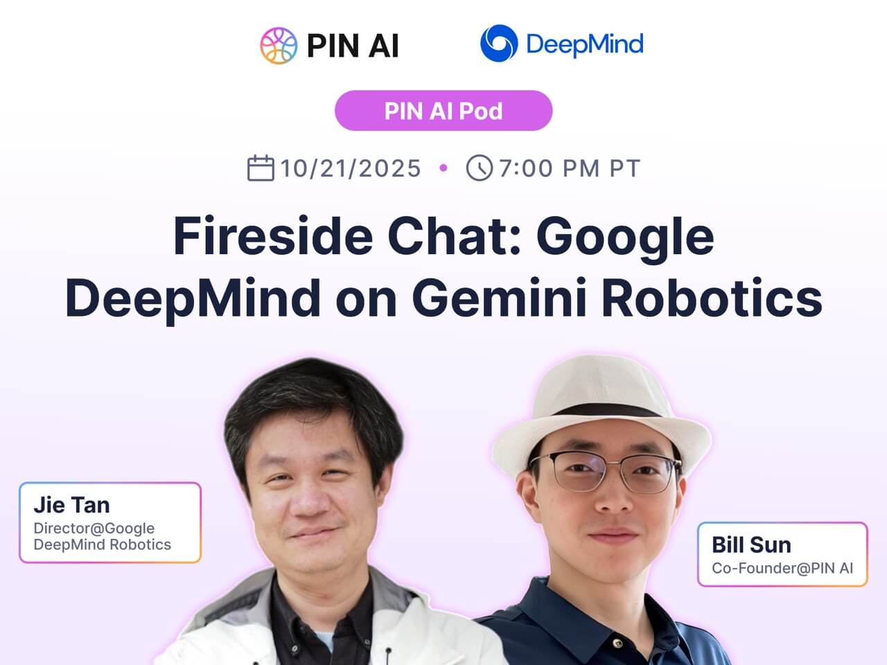
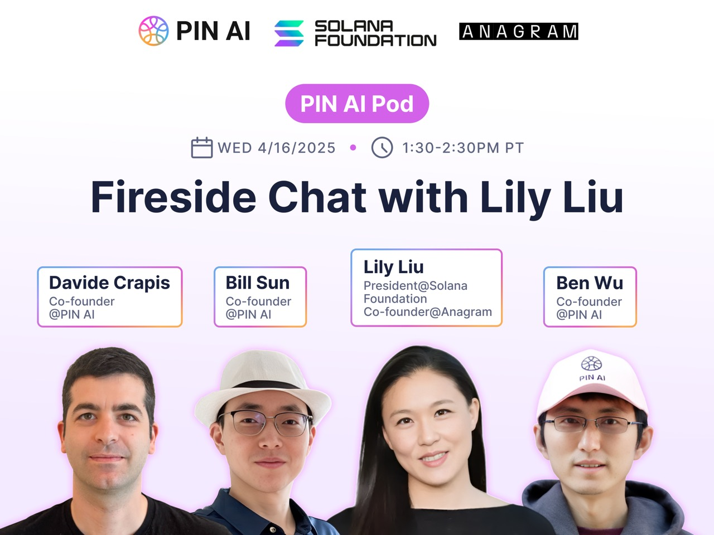
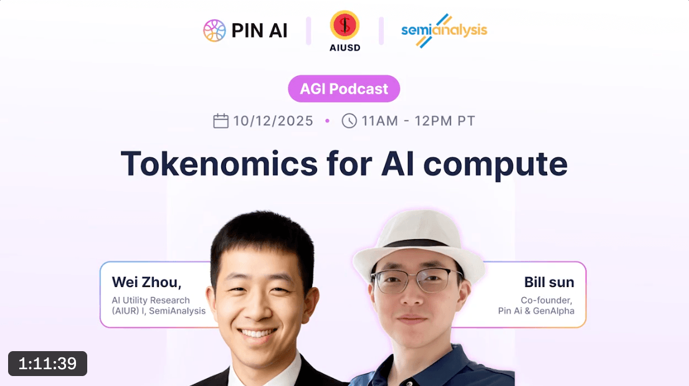
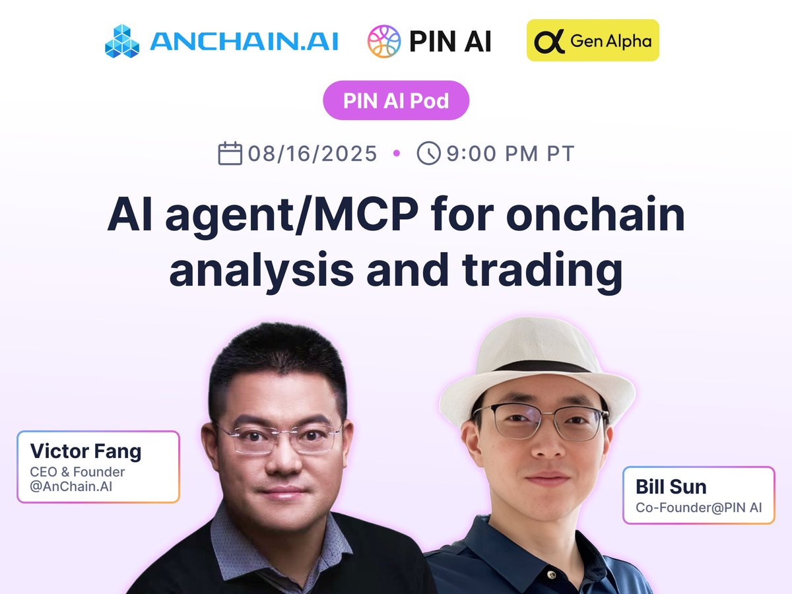
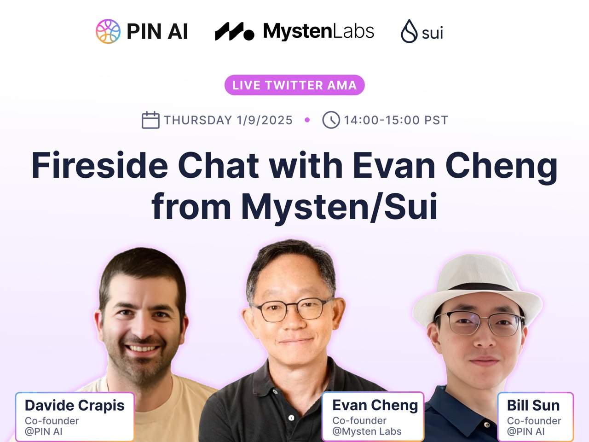
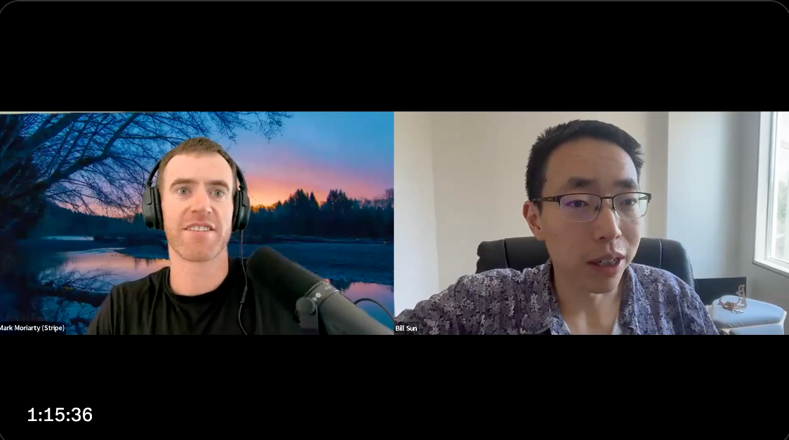
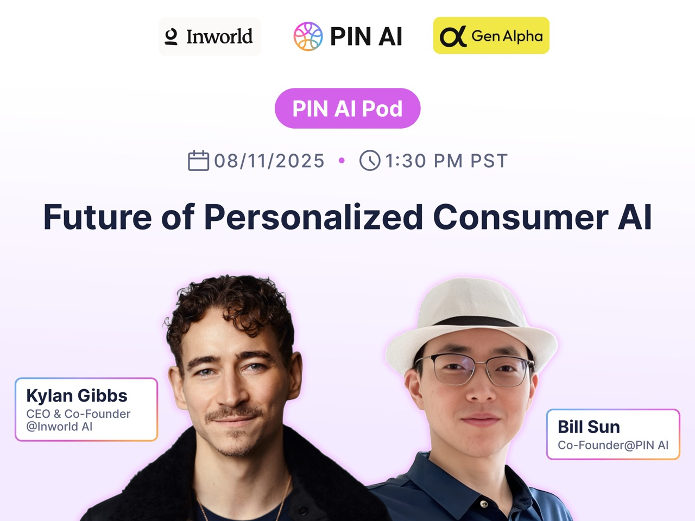
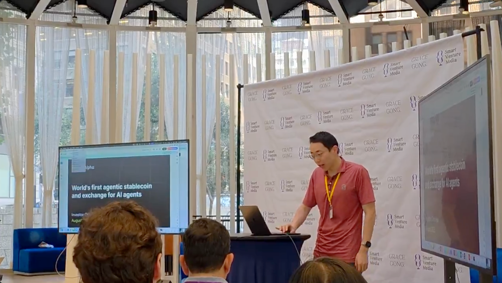
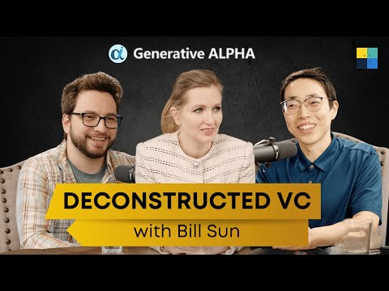
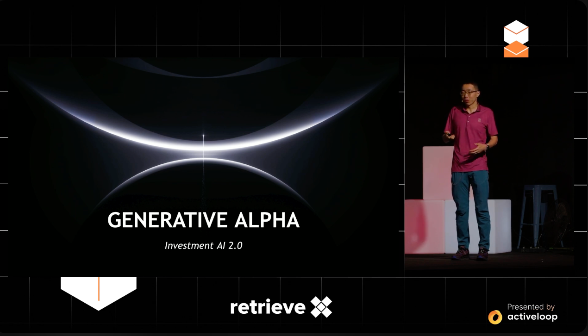

Hosted
PIN AI / Hosted Conversations
Conversations hosted in Bill Sun's orbit, spanning robotics, market structure, protocol design, stablecoins, and frontier AI builders.

Crypto Infrastructure
Lily Liu, President of Solana Foundation
Protocol design, crypto infrastructure, and the operating realities behind high-throughput networks.


Security
Victor Fang / AnChain.AI
Security, compliance, and why blockchain intelligence still matters once systems leave the demo layer.

Protocols
Evan Cheng, Mysten / Sui CEO
Protocol performance, system design, and the tradeoffs behind scalable onchain infrastructure.

Stablecoins
Stripe on Stable Coin
Payments, settlement, and what stablecoins change once they become usable infrastructure rather than narrative.

AI Product
InWorld CEO
Conversational systems, product infrastructure, and what it takes to move AI agents from demo to durable use case.

AIUSD
Talk to Announce AIUSD in SV
A short launch-oriented talk on AIUSD and the broader direction of machine-native capital coordination.
Guest
Guest Appearances
Interviews, outside podcasts, conference talks, and Chinese-language appearances where Bill Sun is the guest rather than the host.

Podcast
DVC Interview: How Stanford PhD Bill Is Disrupting Wall Street with AI
A longer-form interview on AI trading systems, Wall Street, and why the product opportunity sits at the intersection of research and execution.

Conference
Building AI Trader with Reasoning and RAG | Bill Sun | Generative Alpha | RetrieveX 2024
Bill Sun at RetrieveX 2024 on reasoning systems, retrieval, and how to build trading agents that can operate with real feedback loops.
Anthropic
Sophia Interview on Anthropic, Claude Code, and Evaluation
English and Chinese follow-up conversations on Claude, Claude Code, evaluation, agent wallets, and AI trading infrastructure.
Archive
PIN AI Cover Archive
Remaining cover art and archived episodes from the PIN AI visual library.